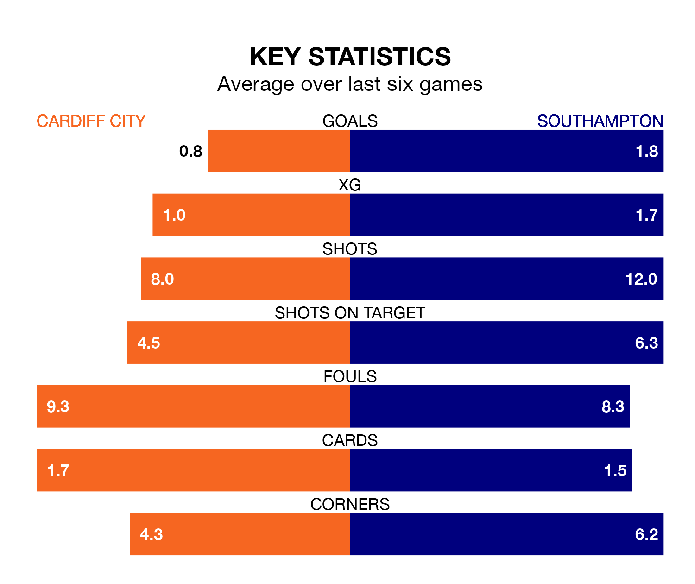

Southampton are strong favourites to take all three points despite Cardiff City's home advantage in Saturday's match at the Cardiff City Stadium.
*Betting Company* are offering odds of 1.51 on Southampton sealing the win, with the visitors sitting fourth in EFL Championship table.
Cardiff, who are 11th in the league and 25 points behind the Saints, are priced at 6.94 to win. A draw is set at 4.
With 84 goals in 42 games so far this season, Southampton are the league's second-highest scorers with 2.0 goals per game. And they are conceding at an average rate, letting in 54 goals at a rate of 1.3 per game.
Cardiff, meanwhile, are below average scorers, with 1.1 goals per game, compared to a league average of 1.3. They have conceded 1.4 goals per game.
In Adam Armstrong, the Saints have one of the league's most on-form strikers so far this season. He has notched 20 goals in 42 appearances, to sit second in the scoring charts.
His goal rate of one every 175 minutes is quicker than that of Ike Ugbo, City's top scorer with a goal every 201 minutes, and a total of 10 goals in 35 games.
The Bluebirds are in disappointing form in EFL Championship, with two wins and four losses from their last six games.
With three wins and two draws over that period, the visitors' form is better – they have taken 11 points from 18, compared to the home team's six.
Cardiff's last match was on April 13, a 3-1 loss against Millwall, with Yakou Meïté getting the goal for the Bluebirds.
Southampton beat Preston North End 3-0 last time out, on Tuesday, with Che Adams (two) and Stuart Armstrong on the scoresheet.
Saturday's match will be refereed by Oliver Langford, who has taken charge of 25 EFL Championship games so far this season, issuing five red cards and booking 79 players. He has awarded two penalties.
The last Cardiff game Langford refereed was a 2-1 home win against Ipswich Town on March 9. His last Southampton match was their 2-1 loss at home against Hull City on February 20.
Updated: 15:40 (UTC), 18/04/24